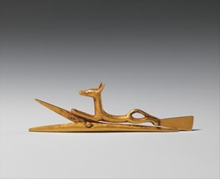

Cả đàn ông và phụ nữ ở Ai Cập cổ đại đều trang điểm. Nó bảo vệ làn da của họ khỏi tác hại của khí hậu sa mạc. Các nhà sản xuất mỹ phẩm sử dụng đất son đỏ để làm son môi và trộn nó với thuốc mỡ để làm son dưỡng môi. Cả nam và nữ đều đánh phấn mắt màu xanh lam, xanh lá cây và kẻ mắt màu đen. Sử dụng một chiếc gương cầm tay bằng đồng có độ bóng cao, một người phụ nữ sẽ bôi khol, một loại thuốc nhuộm đen đựng trong lọ hoặc nồi, để kẻ mắt và lông mày, sử dụng "cọ" hoặc "bút chì" làm từ cây sậy. Đàn ông cũng trang điểm mắt kiểu này, đây không chỉ là mốt mà còn bảo vệ khỏi các bệnh nhiễm trùng mắt thường gặp ở Ai Cập.
